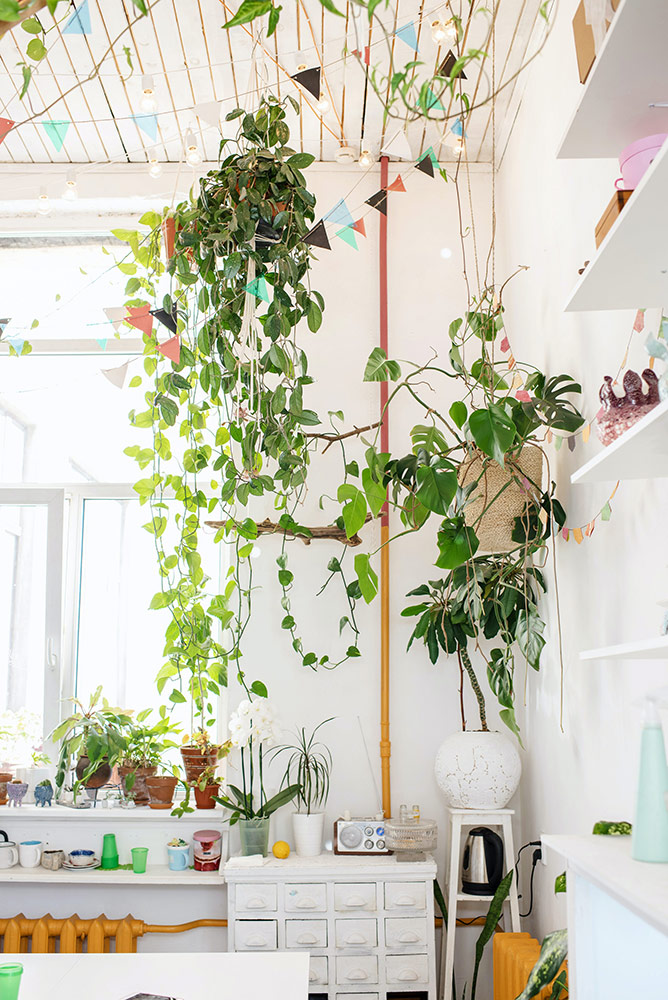
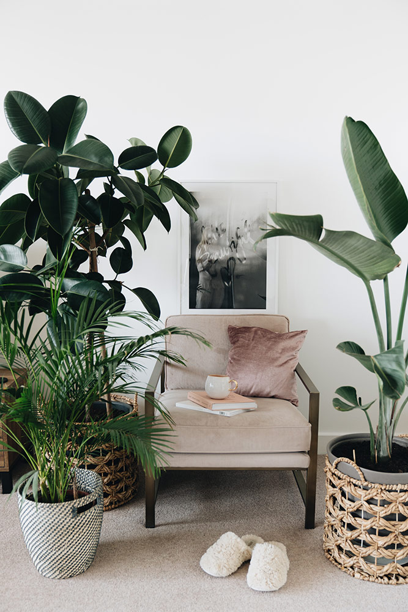

A vida moderna nos centros urbanos é demarcada pela progressiva imersão das pessoas ao concreto e à tecnologia. A busca pela natureza, em meio às cidades, surgiu como uma alternativa em prol de qualidade de vida.
Segundo Ferreira (2005), a vida nas grandes cidades possibilita oportunidades, ao mesmo tempo que tem desvantagens, como poluição, violência urbana e estresse, o que afeta diretamente a qualidade de vida dos habitantes.
Diante disso, surge o conceito de urban jungle, também chamado de “selva urbana”, um estilo de decoração que tem o objetivo de trazer a natureza para dentro dos lares de maneira harmoniosa e integrada à decoração.

Urban jungle aplicada em uma sala residencial
Fonte: Pexels (2023)
A imagem mostra parte de uma sala com móveis e acabamentos em tons claros e branco. Destaca-se a presença de espécies vegetais em vasos na janela, na prateleira e pendentes por suportes presos ao forro.
Essa tendência não se limita apenas a uma dimensão estética, mas também desempenha o papel de oferecer um novo modo de vida, no qual a presença da natureza faz parte de todos os espaços do lar.
A proposta da urban jungle consiste na presença de múltiplas espécies vegetais de diferentes formas, texturas, cores e tamanhos. O propósito é criar um ambiente no qual a vegetação seja decorativamente selvagem e despretensiosa, harmonizando-se com objetos e móveis de maior requinte.
O efeito é dado pelo mix de folhagens em diferentes tamanhos e volumes, dispostos em vasos apoiados em móveis, pendentes ou no chão. O importante é fazer escolhas de espécies que apresentem diferentes alturas e texturas para gerar naturalidade na composição.
Além das plantas, o conceito incorpora móveis e revestimentos em madeira, fibras naturais, pedras e outros materiais orgânicos. A decoração remete a elementos naturais por meio de estampas, quadros, ilustrações e tapeçarias. Tudo isso aliado ao uso de cores neutras, como tons de verde, marrom, bege e branco, que têm a função de destacar as plantas e criar uma sensação de tranquilidade e equilíbrio.
Esses componentes desempenham um papel significativo ao otimizar a conexão com a natureza, criando uma atmosfera serena e acolhedora.

Composição vegetal
Fonte: Pexels (2023)
A imagem mostra uma poltrona central rodeada por espécies vegetais do tipo folhagem com diferentes formatos, portes e tonalidades de verde.
Neste estilo, preza-se muito a iluminação natural, tanto pelas plantas, que precisam de luz para crescer e prosperar, quanto pela atmosfera de um ambiente mais aberto e arejado.
O importante é sempre compor as plantas com o projeto de interiores e manter o efeito desejado sempre.
O contato com a natureza transmite paz e harmonia, além de estar relacionado com sensações de satisfação e estímulo dos sentidos, que são fundamentais para fornecer mais saúde e qualidade de vida.
De acordo com Becker et al. (2019), estudos científicos demonstram que o contato com a natureza afeta a saúde física e emocional, tendo o poder de minimizar efeitos maléficos do cotidiano.
Moradora lendo rodeada de plantas
Fonte: Pexels (2023)
A imagem mostra uma mulher sentada em uma cadeira próxima a uma janela. Ela usa óculos e tem um livro na mão. Ao redor dela, plantas compõem o espaço.
Além disso, plantas também ajudam a purificar o ar, removendo toxinas e aumentando os níveis de oxigênio. Elas absorvem dióxido de carbono e liberam oxigênio fresco, contribuindo para um ambiente mais saudável, o que pode reduzir sintomas de algumas doenças.
A conexão visual com a natureza, gera benefícios para a saúde e o bem-estar, de forma que a urban jungle também oferece uma estética visualmente atraente. A presença de plantas traz vida, cor e textura aos espaços, tornando-os mais interessantes e agradáveis de se estar.
Ao iniciar o processo de planejamento de uma urban jungle, é fundamental compreender as características do espaço disponível para que as escolhas das espécies se adéquem às condições oferecidas.
Algumas dessas condições são cruciais para o crescimento saudável das espécies vegetais, como luminosidade, temperatura, umidade do solo e do ar, podendo ser supridas de forma natural ou artificial, dependendo da estratégia adotada.
Não é essencial ter um jardim ou espaços externos para criar uma urban jungle. Na verdade, o propósito é exatamente introduzir esse conceito nos espaços internos, permitindo uma ampla variedade de abordagens para cultivar plantas em diferentes cômodos da residência.
A sala de estar é frequentemente escolhida como o espaço principal para incorporar a urban jungle, sendo comum dispor nela plantas de variados tamanhos em vasos posicionados no solo ou em prateleiras ou suspensos do teto. Essas plantas podem ser harmonizadas com móveis em madeira, almofadas adornadas com estampas de folhagens e tapetes naturais.
Sala no conceito urban jungle
Fonte: Pexels (2023)
A imagem mostra uma sala com sofá de couro marrom, rede de tecido natural e pufe de sisal. A sala está rodeada por muitas plantas em diferentes espécies, formatos e volumes, apoiadas em prateleiras, no parapeito da janela, no piso e pendentes no teto.
No dormitório, as plantas promovem sensação de tranquilidade e acolhimento ao serem colocadas em mesas de cabeceira, prateleiras ou penduradas em suportes. Isso cria uma atmosfera verde e calmante, promovendo uma boa qualidade de sono.
Dormitório com urban jungle
Fonte: Pexels (2023)
A imagem mostra um dormitório com cama e mesas de cabeceira cercadas de espécies vegetais no entorno.
Na cozinha, uma opção é o cultivo de ervas e plantas comestíveis por meio de hortas internas, a fim de gerar mais sabor aos pratos, promovendo frescor e vitalidade ao espaço.

Cozinha com urban jungle
Pexels (2023)
A imagem mostra uma cozinha com plantas pendentes.
Já nos espaços de trabalho, como home office, as plantas podem ajudar a melhorar a produtividade e a concentração. A conexão com a natureza auxilia no alívio do estresse diário, o que gera um aumento da produtividade e concentração, portanto, plantas nos locais de trabalho propiciam melhor desempenho e redução dos níveis de estresse e ansiedade.
Home office com urban jungle
Pexels (2023)
A imagem mostra um home office com mesa e computador, rodeados de espécies vegetais volumosas e destacando-se no entorno.
Até o banheiro pode ser um local propício para o cultivo de plantas devido às condições de umidade e iluminação natural. O importante é definir espécies que se adaptem às condições específicas desse ambiente.

Banheiro com urban jungle
Pixabay (2023)
A imagem mostra um banheiro com uma banheira próxima à janela e rodeada por plantas.
Assim, a urban jungle é uma alternativa para trazer um pouco deste verde para dentro dos lares, inserindo a natureza na decoração como forma de gerar vida, aconchego e bem-estar às moradias urbanas.
Existem várias plantas que são populares e adequadas para serem usadas na urban jungle, a escolha depende do espaço disponível, das condições de iluminação e dos cuidados a fornecer.
O grupo de folhagem é o frequentemente empregado, visto que por si só tem o potencial de criar um espetáculo visual devido à sua natureza ornamental, expressa por cores, formas e texturas.
Adicionalmente, outros grupos, como palmeiras, bromélias, plantas pendentes, arbustos e até flores, são incorporados nas composições, servindo como pontos destacados de cores e formas.
Confira alguns exemplos de espécies vegetais que são muito aplicadas nos projetos que empregam a urban jungle:

Hera Ж
(Hedera helix)
Trepadeira com folhas verdes com manchas mais claras recortadas em formato de estrela.
Espada-de-são-jorge Ж
(Sansevieria trifasciata)
Folhas eretas em forma de espada, com listras horizontais de cores branca-esverdeada e acinzentadas em ziguezague.
Peperômia-filodendro Ж
(Peperomia scandens)
Planta pendente com folhas delicadas em verde-claro e galhos dilatados.
Costela-de-adão Ж
(Monstera deliciosa)
Folhas grandes e largas, na cor verde-escura, recortadas e com alguns furos.
Jiboia Ж
(Epipremnum pinnatum)
Trepadeira ornamental com folhas em formato de coração nas cores verde ou verde rajada de amarelo e branco.
Samambaia-americana Ж
(Nephrolepis exaltata)
Forma de touceira volumosa com folhas longas e subdivididas em folículos rendados na coloração verde.
Lírio-da-paz Ж
(Spathiphyllum wallisii)
Folhagem verde e brilhante. Flor branca, semelhante a uma pétala, com um pequeno pendão internamente.
Renda-portuguesa Ж
(Davallia fejeensis)
Folhas verdes grandes, cheias de detalhamentos e recortes que lembram rendas.
Palmeira-camedórea
(Chamaedorea elegans)
Minipalmeira com folhas pinadas, brilhantes e densamente arranjadas no topo da planta.
Antúrio Ж
(Anthurium andraeanum)
Folhas verdes, grandes e brilhantes. Brácteas (flores) vermelhas brilhantes em formato de coração.
Palmeira-ráfis
(Rhapis excelsa)
Caule com múltiplos estipes e folhas verde-escuras brilhantes, de forma palmada e plissada.
Begônia rex Ж
(Begonia rex)
Folhagem densa e ornamental, com folhas grandes e assimétricas de cores verde, bronze, rosa ou cinza.
Ж: Tóxicas
O sucesso no cultivo de plantas em ambientes internos requer uma minuciosa análise de fatores essenciais, com destaque especial para a luminosidade. As plantas podem ser categorizadas conforme suas necessidades de luz, variando entre aquelas que requerem intensidade elevada, moderada ou baixa. Como resultado, a escolha da espécie e seu posicionamento dependem das características específicas do espaço, incluindo a presença ou ausência de luz solar direta proveniente das janelas. Em certos casos, pode se tornar essencial complementar a iluminação natural por meio de lâmpadas LED (diodo emissor de luz) especialmente projetadas para o cultivo vegetal.
Composição vegetal em uma sala
Pexels (2023)
A imagem mostra o cômodo de uma casa repleto de espécies vegetais de diferentes portes, tamanhos, texturas e cores.
Outro elemento crucial a ser considerado é a amplitude térmica predominante no ambiente. Enquanto a maioria das plantas de interiores floresce em temperaturas variando entre 18°C e 26°C, existem espécies com adaptações para diferentes condições climáticas. Indiferentemente das espécies escolhidas, é prudente evitar exposição a correntes de ar frio ou locais excessivamente aquecidos, como próximo a aquecedores ou aparelhos de ar-condicionado.
É importante ponderar o tamanho das plantas em relação à disponibilidade de espaço para vasos ou suportes, além da dedicação necessária para garantir a manutenção adequada.
Alguns cuidados são necessários ao escolher as espécies vegetais para compor a urban jungle, principalmente em relação à toxidade. Algumas plantas podem ser tóxicas se ingeridas e representar um risco para a saúde dos animais ou das crianças, por isso, é importante certificar-se de escolher plantas seguras para o ambiente em que serão colocadas. Se não houver animais de estimação ou crianças em casa, tenha em mente que a classificação de uma planta como tóxica não implica que sua convivência seja prejudicial.
Cuidados e convívio com plantas
Pexels (2023)
A imagem mostra uma mulher e um cachorro deitados em uma cama com algumas plantas dispostas no entorno do quarto.
Muitas pessoas acreditam que a introdução de plantas em espaços internos aumenta a complexidade e o esforço necessários para cuidar delas. No entanto, essa percepção pode ser resultado da escolha de plantas que não se adaptam bem à rotina dos moradores ou às condições específicas do ambiente.
Assegurar a vitalidade das plantas em um contexto de urban jungle demanda a avaliação minuciosa de diversos elementos que impactam em seu crescimento sustentável.
Entre esses elementos estão os seguintes:
A luminosidade é fundamental, uma vez que as plantas dependem da luz apropriada para seu florescimento, sendo então importante a alocação criteriosa, correspondente às exigências individuais da espécie.
A adequada irrigação é essencial, de forma que a umidade varia de acordo com as particularidades das espécies, evitando excessos ou carências que possam conduzir a complicações.
A realização de podas e a remoção de folhas secas ou doentes devem ocorrer regularmente, tal como a seleção de substrato e a aplicação de adubos apropriados, uma vez que viabilizam o aporte de nutrientes vitais ao crescimento. Isso deve ser aliado ao procedimento de transplante, que se faz necessário conforme o crescimento das plantas, que acabam necessitando de espaço adicional para suas raízes.

Manutenção de plantas
Pexels (2023)
A imagem mostra uma mão com um regador fazendo a irrigação de alguns potes com plantas.
As plantas demandam atenção e cuidados diários para assegurar sua sobrevivência. De maneira similar a qualquer organismo vivo, as plantas exibem sinais quando há desequilíbrio.
Portanto, a observação detalhada das plantas é essencial para entender suas necessidades e responder adequadamente a estas. Nesse sentido, é recomendável conduzir pesquisas e estudos específicos sobre as espécies em cultivo, buscando informações atualizadas para aprofundar a compreensão de suas particularidades individuais.
Dentro do ambiente residencial, as plantas desempenham um papel muito além do mero aspecto decorativo; elas constituem seres vivos em processo contínuo de crescimento e, por essa razão, demandam cuidados específicos. Assim, para o sucesso no desenvolvimento de uma urban jungle é importante seguir alguns critérios, tais como:
Cultivo de plantas
Pexels (2023)
A imagem mostra uma mulher rodeada de potes, plantas, insumos e ferramentas de cultivo vegetal, plantando algumas espécies vegetais.
A abordagem da urban jungle tem como objetivo incorporar a natureza aos espaços internos por meio da utilização de plantas e elementos naturais, visando criar ambientes internos que sejam caracterizados por sua vegetação exuberante e acolhedora.
O designer de interiores pode empregar o conceito de urban jungle como uma solução de design contemporânea, enriquecendo e valorizando os ambientes projetados.